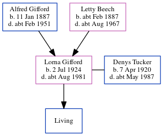

Denys Harry Edgar Tucker 1920 - c1987
[ Home ] | [ Calendar ] | [ Surnames Index ] | [ Errors ] | [ Family History ]Denys Tucker, the husband of Lorna Winifred Gifford (the second cousin once-removed on the mother's side of Nigel Horne), was born in Brentford, London, England on 7 Apr 19201,2,3 and. He married Lorna (with whom he had 1 surviving child, ) in Brentford around Feb 19454. On 29 Sept 1939, he was living at 21 Denbigh Road, Hounslow, London, England1.
He died c. May 1987 in Camden, London, England3.
Citations
- 1939 Register - Findmypast (was the son of the head of the household)
- England & Wales births 1837-2006 - Findmypast
- England & Wales deaths 1837-2007 - Findmypast
- England & Wales Marriages 1837-2005 - Findmypast
Media
England & Wales births 1837-2006 - BMD/B/1920/2/AZ/001731/132
England & Wales marriages 1837-2005 - BMD/M/1945/1/AZ/001177/004
England & Wales deaths 1837-2007 - BMD/D/1987/4/76441282
1939 Register - TNA/R39/0844/0844D/009/10
Family Tree
Map
Generated by ged2site. Last updated on Jul 3, 2024
Known Issues
No records of living with anyone